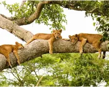

Bwindi Impenetrable National Park
Located in southwestern Uganda, Bwindi is famous for mountain gorilla trekking and dense tropical rainforest. It is one of Uganda's most visited tourist destinations and a UNESCO World Heritage Site.
Uganda is home to diverse wildlife, breathtaking landscapes, and some of Africa's most famous safari destinations.
Located in southwestern Uganda, Bwindi is famous for mountain gorilla trekking and dense tropical rainforest. It is one of Uganda's most visited tourist destinations and a UNESCO World Heritage Site.
Uganda's largest national park is known for the powerful Murchison Falls where the Nile River forces through a narrow gorge before plunging dramatically.

Famous for tree-climbing lions, boat cruises on the Kazinga Channel, and a wide variety of wildlife including elephants, buffaloes, and hippos.
Binoculars help you enjoy wildlife viewing and bird watching.
Lightweight and neutral-colored clothing is ideal for safaris.
Always follow park regulations and maintain a safe distance.